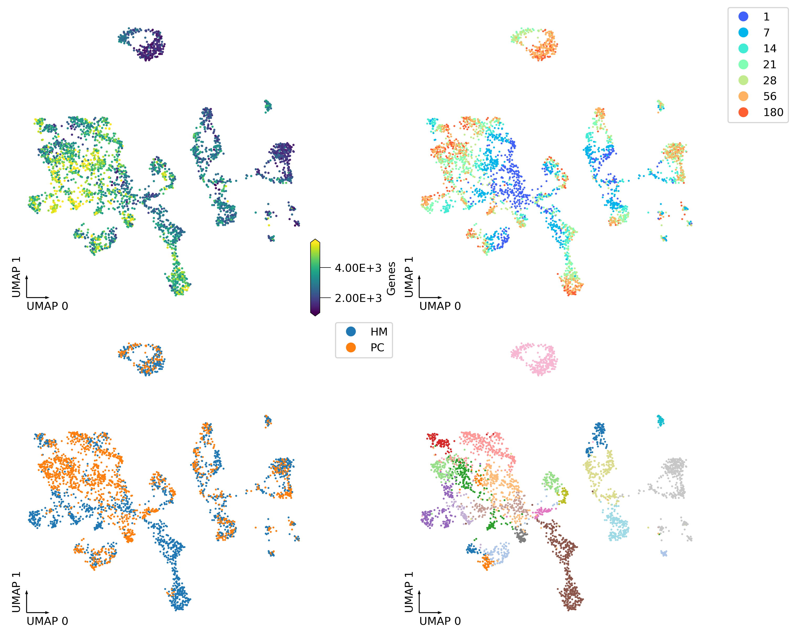
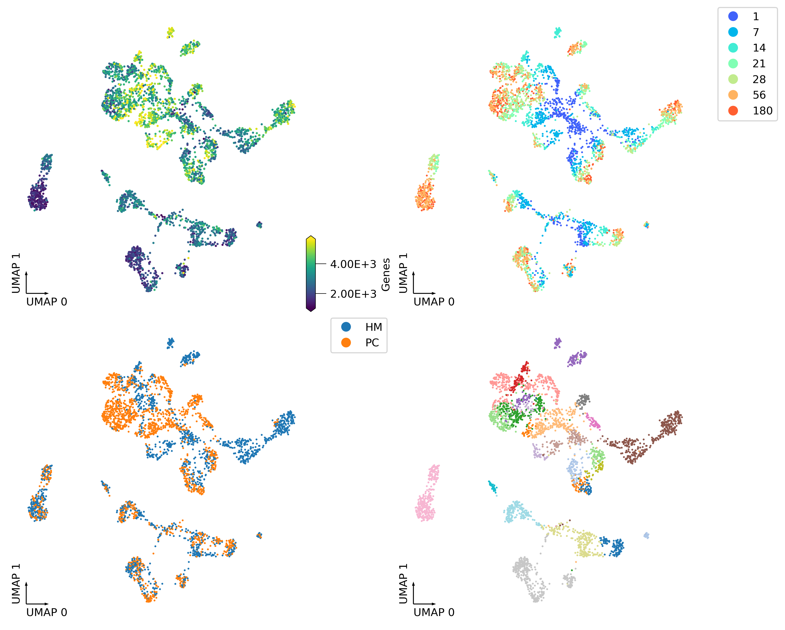

scRNA(MALBAC) clustering#
import numpy as np
import pandas as pd
from glob import glob
import anndata
import scanpy as sc
import matplotlib as mpl
import matplotlib.pyplot as plt
from matplotlib.colors import LogNorm
from matplotlib import cm as cm
import seaborn as sns
from scipy.sparse import csr_matrix
from ALLCools.plot import *
from ALLCools.clustering import *
from sklearn.decomposition import TruncatedSVD
from sklearn.preprocessing import normalize
mpl.style.use('default')
mpl.rcParams['pdf.fonttype'] = 42
mpl.rcParams['ps.fonttype'] = 42
mpl.rcParams['font.family'] = 'sans-serif'
mpl.rcParams['font.sans-serif'] = 'Helvetica'
indir = '/home/jzhou_salk_edu/sky_workdir/test_schicluster/Tan2021/'
data = pd.read_csv(f'{indir}other_data/GSE162509_UMIcount_mouse_decon_filtered_genes.tsv.gz', index_col=0, header=0, sep='\t')
data
| Gnai3 | Cdc45 | H19 | Scml2 | Apoh | Narf | Cav2 | Klf6 | Scmh1 | Cox5a | ... | AC154500.1 | AC114990.3 | AC169675.1 | AC109261.3 | AC109261.4 | AC154486.3 | CAAA01189291.2 | CT025659.3 | AC136921.2 | AC134446.1 | |
|---|---|---|---|---|---|---|---|---|---|---|---|---|---|---|---|---|---|---|---|---|---|
| PR10_HCA_P14HM-1_01 | 0 | 0 | 0 | 0 | 0 | 1 | 0 | 2 | 2 | 1 | ... | 0 | 0 | 0 | 0 | 0 | 1 | 0 | 0 | 0 | 0 |
| PR10_HCA_P14HM-1_02 | 0 | 0 | 0 | 0 | 0 | 1 | 0 | 0 | 2 | 0 | ... | 0 | 0 | 0 | 0 | 0 | 0 | 0 | 0 | 0 | 0 |
| PR10_HCA_P14HM-1_03 | 2 | 0 | 0 | 0 | 0 | 2 | 0 | 7 | 3 | 1 | ... | 0 | 0 | 0 | 0 | 0 | 0 | 0 | 0 | 0 | 0 |
| PR10_HCA_P14HM-1_04 | 1 | 0 | 0 | 0 | 0 | 0 | 0 | 0 | 0 | 1 | ... | 0 | 0 | 0 | 0 | 0 | 0 | 0 | 0 | 0 | 0 |
| PR10_HCA_P14HM-1_07 | 0 | 0 | 0 | 0 | 0 | 3 | 0 | 3 | 4 | 1 | ... | 0 | 0 | 0 | 0 | 0 | 0 | 0 | 0 | 0 | 0 |
| ... | ... | ... | ... | ... | ... | ... | ... | ... | ... | ... | ... | ... | ... | ... | ... | ... | ... | ... | ... | ... | ... |
| PR10_HCA_P7PC-3_92 | 0 | 0 | 0 | 0 | 0 | 1 | 0 | 16 | 3 | 0 | ... | 0 | 0 | 0 | 0 | 0 | 0 | 0 | 0 | 0 | 0 |
| PR10_HCA_P7PC-3_93 | 0 | 0 | 0 | 0 | 0 | 0 | 0 | 0 | 0 | 0 | ... | 0 | 0 | 0 | 0 | 0 | 0 | 0 | 0 | 0 | 0 |
| PR10_HCA_P7PC-3_94 | 1 | 0 | 0 | 0 | 0 | 0 | 0 | 0 | 1 | 0 | ... | 0 | 0 | 0 | 0 | 0 | 0 | 0 | 0 | 0 | 0 |
| PR10_HCA_P7PC-3_95 | 0 | 0 | 0 | 0 | 0 | 0 | 0 | 8 | 1 | 3 | ... | 0 | 0 | 0 | 0 | 0 | 0 | 0 | 0 | 0 | 0 |
| PR10_HCA_P7PC-3_96 | 0 | 0 | 0 | 0 | 0 | 1 | 0 | 0 | 0 | 0 | ... | 0 | 0 | 0 | 0 | 0 | 0 | 0 | 0 | 0 | 0 |
3517 rows × 40760 columns
meta = pd.read_csv(f'{indir}other_data/GSE162509_mapStat_mouse_filter.txt.gz', sep='\t', index_col=0, header=0)
meta
| Reads | Uniquely | Uniquely_ratio | Multi | Multi_ratio | Many | Many_ratio | A_ratio | Mapping_ratio | Genes | nUMI | mito | ERCC | assigned_ratio | avg.cor | keep | |
|---|---|---|---|---|---|---|---|---|---|---|---|---|---|---|---|---|
| PR10_HCA_P14HM-1_01 | 3815377 | 3558074 | 0.9326 | 65771 | 0.0172 | 8865 | 0.0023 | 0.988705 | 0.9521 | 6414 | 36609 | 0.002103 | 0.020966 | 0.211559 | 0.418141 | True |
| PR10_HCA_P14HM-1_02 | 936833 | 867607 | 0.9261 | 19886 | 0.0212 | 2618 | 0.0028 | 0.985054 | 0.9501 | 3184 | 7940 | 0.011083 | 0.074592 | 0.215140 | 0.352350 | True |
| PR10_HCA_P14HM-1_03 | 2196459 | 2059892 | 0.9378 | 35331 | 0.0161 | 3744 | 0.0017 | 0.988487 | 0.9556 | 4710 | 16613 | 0.004093 | 0.028139 | 0.197201 | 0.393179 | True |
| PR10_HCA_P14HM-1_04 | 1334069 | 1229429 | 0.9216 | 28281 | 0.0212 | 4119 | 0.0031 | 0.986058 | 0.9459 | 3825 | 10736 | 0.002701 | 0.056673 | 0.233741 | 0.364440 | True |
| PR10_HCA_P14HM-1_05 | 268103 | 187902 | 0.7009 | 6316 | 0.0236 | 950 | 0.0035 | 0.968316 | 0.7280 | 1223 | 2617 | 0.049675 | 0.216936 | 0.355089 | 0.218429 | False |
| ... | ... | ... | ... | ... | ... | ... | ... | ... | ... | ... | ... | ... | ... | ... | ... | ... |
| PR10_HCA_P7PC-3_92 | 1287766 | 1177633 | 0.9145 | 28821 | 0.0224 | 5017 | 0.0039 | 0.978918 | 0.9408 | 3593 | 11865 | 0.005057 | 0.056011 | 0.199417 | 0.356637 | True |
| PR10_HCA_P7PC-3_93 | 676788 | 607913 | 0.8982 | 13266 | 0.0196 | 1459 | 0.0022 | 0.978000 | 0.9200 | 1945 | 4458 | 0.026918 | 0.108400 | 0.251697 | 0.294853 | True |
| PR10_HCA_P7PC-3_94 | 2375796 | 2074957 | 0.8734 | 39335 | 0.0166 | 5894 | 0.0025 | 0.970208 | 0.8925 | 4040 | 18380 | 0.004570 | 0.050914 | 0.195646 | 0.369667 | True |
| PR10_HCA_P7PC-3_95 | 1585829 | 1425909 | 0.8992 | 24091 | 0.0152 | 2937 | 0.0019 | 0.962138 | 0.9163 | 3752 | 16077 | 0.005411 | 0.059164 | 0.267316 | 0.368889 | True |
| PR10_HCA_P7PC-3_96 | 1821256 | 1614804 | 0.8866 | 40218 | 0.0221 | 6150 | 0.0034 | 0.973619 | 0.9121 | 4087 | 27057 | 0.020993 | 0.052792 | 0.279251 | 0.373820 | True |
4032 rows × 16 columns
gene_meta = pd.read_csv('/data/ref/mm10/gencode/vm22/gencode.vM22.annotation.gene.flat.tsv.gz', header=0, index_col=None, sep='\t')
gene_meta
| chrom | source | feature | start | end | score | strand | phase | gene_id | transcript_id | ... | gene_name | transcript_type | transcript_status | transcript_name | exon_number | exon_id | level | mgi_id | havana_gene | tag | |
|---|---|---|---|---|---|---|---|---|---|---|---|---|---|---|---|---|---|---|---|---|---|
| 0 | chr1 | HAVANA | gene | 3073253 | 3074322 | . | + | . | ENSMUSG00000102693.1 | NaN | ... | 4933401J01Rik | NaN | NaN | NaN | NaN | NaN | 2 | MGI:1918292 | OTTMUSG00000049935.1 | NaN |
| 1 | chr1 | ENSEMBL | gene | 3102016 | 3102125 | . | + | . | ENSMUSG00000064842.1 | NaN | ... | Gm26206 | NaN | NaN | NaN | NaN | NaN | 3 | MGI:5455983 | NaN | NaN |
| 2 | chr1 | HAVANA | gene | 3205901 | 3671498 | . | - | . | ENSMUSG00000051951.5 | NaN | ... | Xkr4 | NaN | NaN | NaN | NaN | NaN | 2 | MGI:3528744 | OTTMUSG00000026353.2 | NaN |
| 3 | chr1 | HAVANA | gene | 3252757 | 3253236 | . | + | . | ENSMUSG00000102851.1 | NaN | ... | Gm18956 | NaN | NaN | NaN | NaN | NaN | 1 | MGI:5011141 | OTTMUSG00000049958.1 | pseudo_consens |
| 4 | chr1 | HAVANA | gene | 3365731 | 3368549 | . | - | . | ENSMUSG00000103377.1 | NaN | ... | Gm37180 | NaN | NaN | NaN | NaN | NaN | 2 | MGI:5610408 | OTTMUSG00000049960.1 | NaN |
| ... | ... | ... | ... | ... | ... | ... | ... | ... | ... | ... | ... | ... | ... | ... | ... | ... | ... | ... | ... | ... | ... |
| 55482 | chrM | ENSEMBL | gene | 13552 | 14070 | . | - | . | ENSMUSG00000064368.1 | NaN | ... | mt-Nd6 | NaN | NaN | NaN | NaN | NaN | 3 | MGI:102495 | NaN | NaN |
| 55483 | chrM | ENSEMBL | gene | 14071 | 14139 | . | - | . | ENSMUSG00000064369.1 | NaN | ... | mt-Te | NaN | NaN | NaN | NaN | NaN | 3 | MGI:102488 | NaN | NaN |
| 55484 | chrM | ENSEMBL | gene | 14145 | 15288 | . | + | . | ENSMUSG00000064370.1 | NaN | ... | mt-Cytb | NaN | NaN | NaN | NaN | NaN | 3 | MGI:102501 | NaN | NaN |
| 55485 | chrM | ENSEMBL | gene | 15289 | 15355 | . | + | . | ENSMUSG00000064371.1 | NaN | ... | mt-Tt | NaN | NaN | NaN | NaN | NaN | 3 | MGI:102473 | NaN | NaN |
| 55486 | chrM | ENSEMBL | gene | 15356 | 15422 | . | - | . | ENSMUSG00000064372.1 | NaN | ... | mt-Tp | NaN | NaN | NaN | NaN | NaN | 3 | MGI:102478 | NaN | NaN |
55487 rows × 22 columns
gene_meta = gene_meta.loc[~gene_meta['gene_name'].duplicated()]
gene_meta = gene_meta.set_index('gene_name')[['chrom', 'start', 'end', 'gene_id', 'strand']]
data = data.loc[:, data.columns.isin(gene_meta.index)]
adata = anndata.AnnData(csr_matrix(data.values),
obs=meta.loc[data.index, ['Genes', 'nUMI']],
var=gene_meta.loc[data.columns]
)
adata
AnnData object with n_obs × n_vars = 3517 × 39990
obs: 'Genes', 'nUMI'
var: 'chrom', 'start', 'end', 'gene_id', 'strand'
adata.write_h5ad('Tan2021_rna.h5ad')
adata = anndata.read_h5ad('Tan2021_rna.h5ad')
adata
AnnData object with n_obs × n_vars = 3517 × 3000
obs: 'Genes', 'nUMI', 'umap_0', 'umap_1', 'age', 'region'
var: 'chrom', 'start', 'end', 'gene_id', 'strand', 'n_cells', 'highly_variable', 'highly_variable_rank', 'means', 'variances', 'variances_norm'
uns: 'hvg', 'log1p', 'neighbors', 'umap'
obsm: 'X_pca', 'X_umap', 'rna_pca_all'
obsp: 'connectivities', 'distances'
cluster = pd.read_csv(f'{indir}metadata_major_cell_types.txt', sep='\t', header=None, index_col=0)[1]
cluster_neu = pd.read_csv(f'{indir}metadata_neuron_cell_types.txt', sep='\t', header=None, index_col=0)[1]
cluster.loc[cluster_neu.index] = cluster_neu.copy()
cluster.value_counts()
Hippocampal Granuale Cell 398
Microglia Etc. 364
Mature Oligodendrocyte 314
Cortical L6 Pyramidal Cell 297
Neonatal Astrocyte 230
Oligodendrocyte Progenitor 177
Hippocampal CA1 Pyramidal Cell 175
Cortical L2-5 Pyramidal Cell, Neonatal 156
Cortical L4 Pyramidal Cell 151
Hippocampal Pyramidal Cell, Neonatal 136
Cortical L2/3 Pyramidal Cell 134
Adult Astrocyte 116
Cortical L5 Pyramidal Cell 96
PV/SST Interneuron, Neonatal 96
Unknown Interneuron 1 94
VIP Interneuron 85
Hippocampal CA3 Pyramidal Cell 73
Medium Spiny Neuron 73
Unknown Interneuron 2 73
MEIS2 Interneuron 53
SST Interneuron 49
PV Interneuron 45
Newly Formed Oligodendrocyte 39
NDNF Interneuron 38
Cortical L2-4 Pyramidal Cell, Intermediate 30
Cajal-Retzius Cell 25
Name: 1, dtype: int64
adata.obs['region'] = [xx.split('-')[0].split('_')[-1][-2:] for xx in adata.obs.index]
adata.obs['age'] = [xx.split('-')[0].split('_')[-1][1:-2] for xx in adata.obs.index]
adata.obs['age'] = adata.obs['age'].astype(int)
adata.obs['cluster'] = cluster.copy()
sc.pp.filter_genes(adata, min_cells=10)
sc.pp.highly_variable_genes(adata, n_top_genes=3000, flavor='seurat_v3')
adata.raw = adata.copy()
adata = adata[:, adata.var['highly_variable']].copy()
adata.X.data = adata.X.data / np.repeat(adata.obs['nUMI'].values, adata.X.getnnz(axis=1)) * adata.obs['nUMI'].median()
sc.pp.log1p(adata)
model = TruncatedSVD(n_components=50, algorithm='arpack', random_state=0)
model.fit(adata.X)
sel_dim = (model.singular_values_ != 0)
print(sel_dim.sum())
50
data = model.transform(adata.X)
adata.obsm['rna_pca_all'] = data / model.singular_values_
significant_pc_test(adata, p_cutoff=0.1, update=False, obsm='rna_pca_all')
17 components passed P cutoff of 0.1.
17
adata.obsm['X_pca'] = normalize(adata.obsm['rna_pca_all'][:, :30], axis=1)
def dump_embedding(adata, name, n_dim=2):
# put manifold coordinates into adata.obs
for i in range(n_dim):
adata.obs[f'{name}_{i}'] = adata.obsm[f'X_{name}'][:, i]
return adata
knn = 25
sc.pp.neighbors(adata, n_neighbors=knn, use_rep='X_pca')
sc.tl.umap(adata, maxiter=200, random_state=0)
adata = dump_embedding(adata, 'umap')
fig, axes = plt.subplots(2, 2, figsize=(10, 8), dpi=300, constrained_layout=True)
_ = continuous_scatter(ax=axes[0,0],
data=adata.obs,
hue='Genes',
coord_base='umap',
#max_points=None,
labelsize=10,
s=4)
_ = categorical_scatter(data=adata.obs,
ax=axes[0,1],
coord_base='umap',
hue='age',
palette='rainbow',
labelsize=10,
show_legend=True)
_ = categorical_scatter(ax=axes[1,0],
data=adata.obs,
hue='region',
coord_base='umap',
# text_anno='region',
# palette='tab10',
labelsize=10,
show_legend=True
)
_ = categorical_scatter(ax=axes[1,1],
data=adata.obs,
hue='cluster',
coord_base='umap',
# text_anno='cluster',
palette='tab20',
labelsize=10,
# show_legend=True
)

fig, axes = plt.subplots(2, 2, figsize=(10, 8), dpi=300, constrained_layout=True)
_ = continuous_scatter(ax=axes[0,0],
data=adata.obs,
hue='Genes',
coord_base='umap',
#max_points=None,
labelsize=10,
s=4)
_ = categorical_scatter(data=adata.obs,
ax=axes[0,1],
coord_base='umap',
hue='age',
palette='rainbow',
labelsize=10,
show_legend=True)
_ = categorical_scatter(ax=axes[1,0],
data=adata.obs,
hue='region',
coord_base='umap',
# text_anno='region',
# palette='tab10',
labelsize=10,
show_legend=True
)
_ = categorical_scatter(ax=axes[1,1],
data=adata.obs,
hue='cluster',
coord_base='umap',
# text_anno='cluster',
palette='tab20',
labelsize=10,
# show_legend=True
)
(0.0, 1.0, 0.0, 1.0)
fig, axes = plt.subplots(2, 2, figsize=(10, 8), dpi=300, constrained_layout=True)
_ = continuous_scatter(ax=axes[0,0],
data=adata.obs,
hue='Genes',
coord_base='umap',
#max_points=None,
labelsize=10,
s=4)
_ = categorical_scatter(data=adata.obs,
ax=axes[0,1],
coord_base='umap',
hue='age',
palette='rainbow',
labelsize=10,
show_legend=True)
_ = categorical_scatter(ax=axes[1,0],
data=adata.obs,
hue='region',
coord_base='umap',
# text_anno='region',
# palette='tab10',
labelsize=10,
show_legend=True
)
_ = categorical_scatter(ax=axes[1,1],
data=adata.obs,
hue='cluster',
coord_base='umap',
# text_anno='cluster',
palette='tab20',
labelsize=10,
# show_legend=True
)

adata.write_h5ad('Tan2021_rna.h5ad')